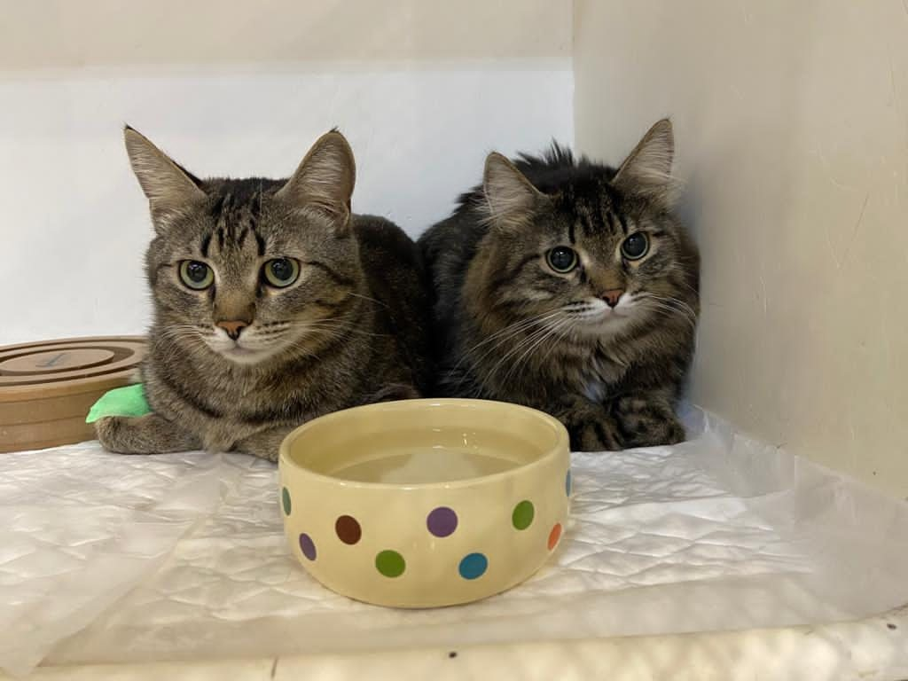
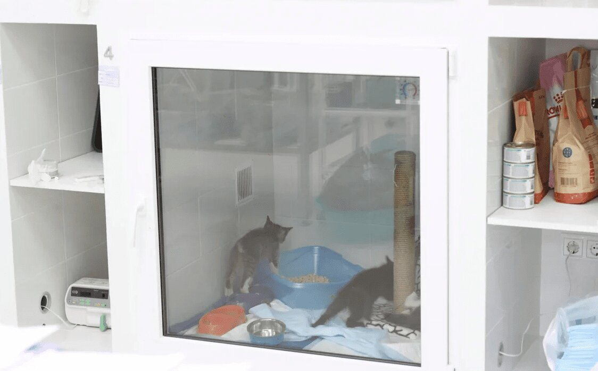

Стационар оснащен всем необходимым для безопасного и комфортного пребывания: легко моющиеся боксы с индивидуальным освещением и подогревом, кислородные боксы, несколько реанимационных наборов для проведения сердечно-легочной реанимации, аппаратура для проведения инфузии, гемотрансфузий, наборы для родовспоможения, аппаратура для контроля жизненных показателей – тонометры, термометры, кардиомониторы.
При необходимости мы проводим срочные анализы крови.
В отделении стационара работают специалисты с большим опытом работы в отделениях реанимации и интенсивной терапии. К каждому пациенту подбирается индивидуальный подход, каждый день разрабатывается план диагностики и дальнейшего лечения. Интенсивная терапия тесно связана с работой хирургического, стоматологического, неврологического, кардиологического и терапевтического отделений. Узкие специалисты осматривают пациентов незамедлительно, по мере необходимости.
С владельцами поддерживается ежедневная связь. Доступны посещения питомцев в отведенное для этого время.
 